4.1.4. Вероятностное шифрование в асимметричных криптосистемах
4.1.4. Вероятностное шифрование в асимметричных криптосистемах
Применительно к асимметричным криптосистемам, использование вероятностного механизма позволяет избежать утечки любой информации о передаваемых данных, что делает невозможным атаку вида "открытый текст/шифртекст". Рассмотрим систему асимметричного вероятностного шифрования Блюма − Голдвассера. Специально для этой схемы был спроектирован генератор псевдослучайных бит BBS (Blum-Blum-Shub), основанный на теории квадратичных остатков. Основное свойство этого генератора − безопасность влево, т. е. по текущему значению нельзя вычислить предыдущее без знания секретного ключа. Шифрование с помощью данного алгоритма выполняется следующим образом.
- Выбираются два больших простых числа 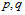, которые являются закрытым ключом, такие, что 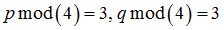 и вычисляется произведение 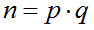, где n является открытым ключом.
- Выбирается случайное число r, взаимно простое с n и вычисляется 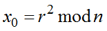.
- Генератор псевдослучайных чисел инициализируется с помощью числа 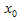, выход генератора вычисляется как 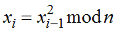.
- Младшие биты выхода генератора 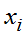для 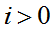 побитно суммируются по модулю 2 с открытым текстом для получения шифртекста.
- Последнее значение
 (которое не использовалось для шифрования) присоединяется к шифртексту.
(которое не использовалось для шифрования) присоединяется к шифртексту.
Структурная схема алгоритма шифрования Блума − Голдвассера приведена на рис. 4.6.
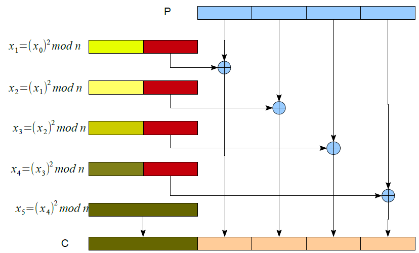 |
Рис. 4.6. Структурная схема вероятностного алгоритма шифрования Блума − Голдвассера |
При выполнении расшифрования сначала с помощью секретного ключа вычисляется значение  из 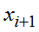, которое используется для инициализации ГПСЧ.
из 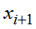, которое используется для инициализации ГПСЧ.
Рассмотрим алгоритм вычисления 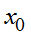, пусть передается с шифртекстом, i известно из количества блоков шифртекста, p, q – секретный ключ, известный получателю, N − параметр шифра, известен всем.
Зная разложение n на множители p,q можно вычислить значения
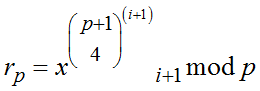;
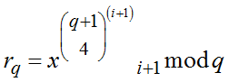
и с их помощью получить начальное значение, используя формулу
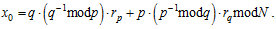
После этого расшифрование происходит аналогично шифрованию, так как операция сложения по модулю 2 является обратной самой себе.
Рассмотренный алгоритм вероятностного шифрования используется на практике и работает быстрее криптосистемы RSA.